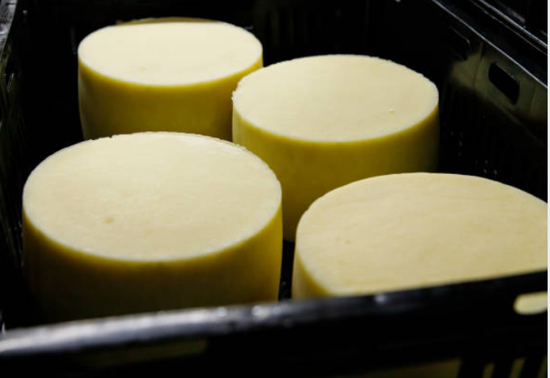
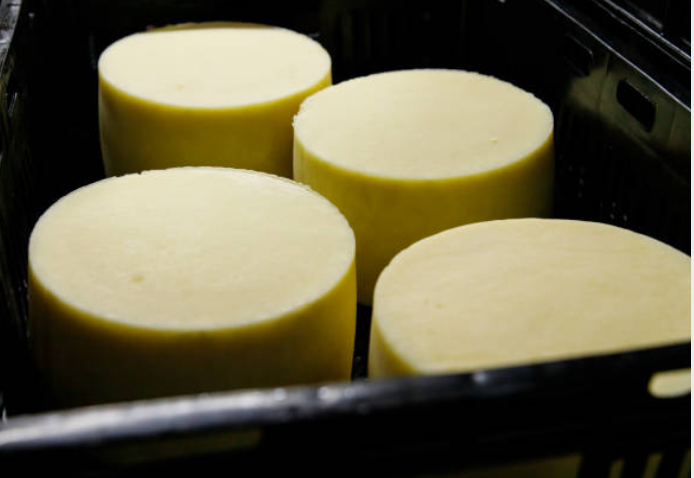
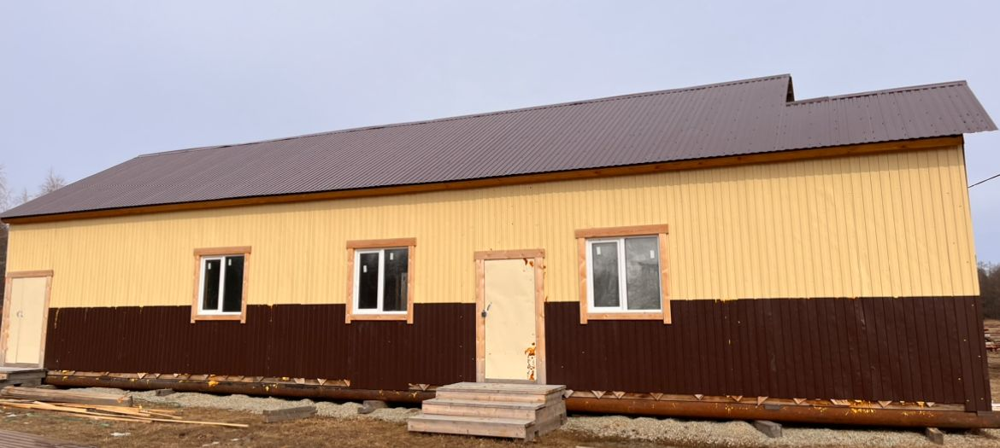
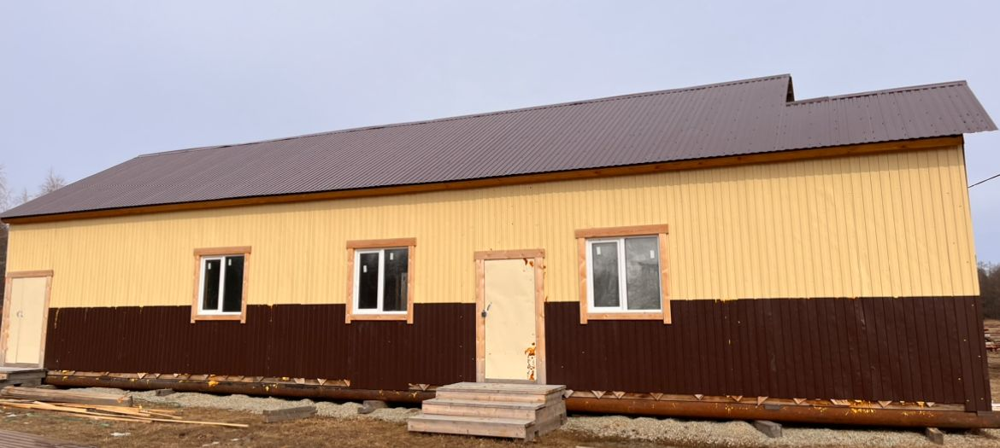

 

Notre fromagerie
Nous prévoyons de lancer un projet de production fromagère dans le village de Petrovka, situé à 40 km de Yakoutsk, la capitale de la République de Sakha (Yakoutie).
En Yakoutie les hivers sont longs et les étés sont courts. La population locale se dédie beaucoup à l'élevage de chevaux de race yakoute et à l'élevage de bovins. Les vaches se déplacent librement dans les pâturages et leur alimentation est naturelle. Ici les concepts d'ensilage, de fanage, et de compléments alimentaires n'existent pas d'où les effets bénéfiques sur la qualité du lait pour la production de fromage.
En Yakoutie, la production de fromage est pratiquement inexistante. Le fromage est généralement importé d'autres régions de Russie, donc il est difficile de trouver des produits frais de haute qualité.
Nous envisageons de créer une petite fromagerie familiale pour faire nos propres fromages. Nous possédons actuellement : un camion laitier, un atelier de fabrication de fromage d'une taille de 19mx7m, un logement de 5x5m pour le personnel, un refroidisseur de 500L, un pasteurisateur de 300L, des cuves fromagères, des moules à fromage, des tables, des plats, etc.